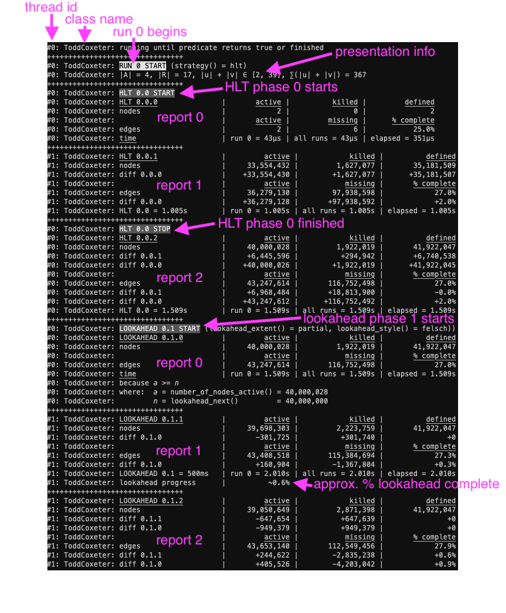
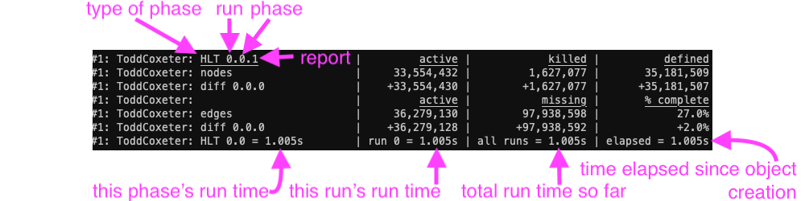
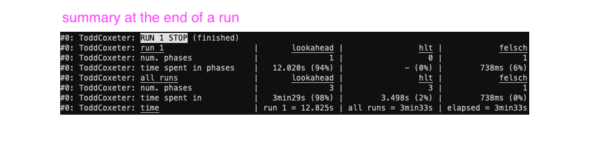

This page contains some details about the information printed during a congruence enumeration performed by a ToddCoxeter instance. This information is output when reporting_enabled returns true. You can enable reporting using a ReportGuard. If reporting is enabled, any call to ToddCoxeter::run, ToddCoxeter::run_until, or ToddCoxeter::run_for will print output that describes what is happening during the enumeration. This generated output is intended to be helpful when running a long (at least multiple seconds) congruence enumeration. If reporting is enabled for short running enumerations, then a fairly large amount of information will be generated in a very short space of time, which may not be desirable.
A single call to one of: ToddCoxeter::run, ToddCoxeter::run_until, or ToddCoxeter::run_for is referred to as a run, each run is comprised of phases (namely, HLT, Felsch, or lookaheads), and with each phase there will be a number of reports. Reports are generated at the start and end of every phase, and every second during a phase.


